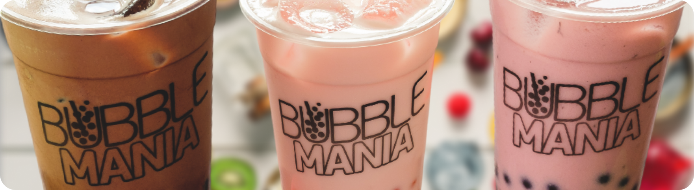

Станьте партнером – откройте прибыльную станцию Bubble Mania и станьте частью успешного и известного бренда – первого бренда Bubble Tea в России, который за более чем 12 лет работы показал эффективность финансовой модели и устойчивость ко всем кризисам!

На фоне повышенного интереса к напитку, появляются новые заведения под названием «Bubble Tea».
Большинство участников рынка продвигают под этим названием собственный продукт, не имеющий отношения к
натуральному Bubble Tea из Тайваня.
К сожалению, такие кафе используют для приготовления напитков отечественные ингредиенты или
дешевые
китайские компоненты, которые резко снижают качество продукции и оставляют негативное впечатление о Bubble
Tea в целом
Нашим франчайзи уже более 10 лет – что является подтверждением эффективности нашей модели франчайзинга.
Мы подберем для вашего города и локации рабочую и эффективную модель работы исходя из нашего 12-летнего
опыта работы с партнерами по франчайзингу и опыта открытия собственных чайных станций
Предложим эффективную стратегию вложений/ инвестиций (мы не тратим деньги на не нужное) - мы бережем
ваши деньги!
Большой банк собственных рекламных материалов и комплексная постоянная поддержка отдела маркетинга
Формат
Фудтрак / павильонФормат
Остров Bubble ManiaФормат
КафеФормат
Кафе в кафеРазработка дизайн-проекта торгового
объекта в соответствии с брендбук
Заказ оборудования у авторизованных
производителей/поставщиков
Технологические карты
Торжественное открытие
с маркетинговой поддержкой
Закупки и оптимизация
бизнес-процессов
Персональный менеджер
Программное обеспечение